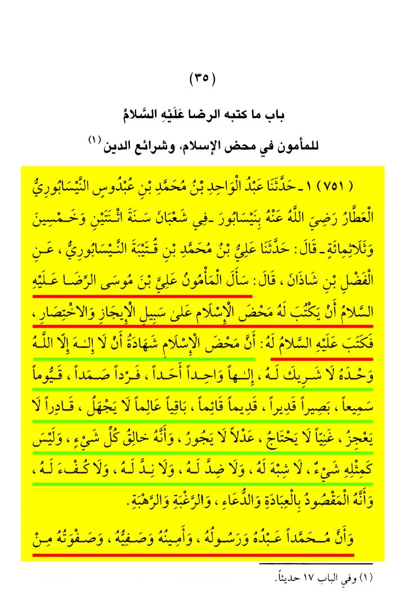

Таухид: свидетельство о единственности Аллаха

Книга-источник: шейх ас-Садук (Ибн Бабавайх аль-Кумми), «Уйун ахбар ар-Рида» (عيون أخبار الرضا), часть 2-я. Именно в этом издании, в главе 35-й («Баб ма катабаху-р-Рида ‘аляйхи-с-салям ли-ль-Ма'муни фи махди-ль-ислам ва шара'и‘и-д-дин»), помещено послание имама ар-Риды (мир ему).
Перевод: Аль-Ма'мун попросил Али ибн Мусу ар-Риду (мир ему), чтобы тот написал ему чистую суть ислама кратко и сжато. И он (мир ему) написал ему: «Чистая суть ислама — это свидетельство, что нет бога, кроме Аллаха, Единого, у Которого нет сотоварища, — Бога Единого, Единственного, Неделимого, Самодостаточного (самад); Вседержащего (каюм), Слышащего, Видящего; Предвечного, Пребывающего, Вечноживого, Знающего — Он не бывает в неведении; Могущего — Он не бывает бессильным; Богатого (не нуждающегося) — Он ни в чём не нуждается; Справедливого — Он не поступает несправедливо. И нет ничего подобного Ему: нет Ему подобия, нет Ему противоположности, нет Ему равного и нет Ему соответствия. И что целью поклонения, мольбы, стремления и страха является только Он один. И что Мухаммад — Его раб и Его посланник, Его доверенный и Его избранник, Его лучшее творение, господин посланных, печать пророков и лучший из миров».
